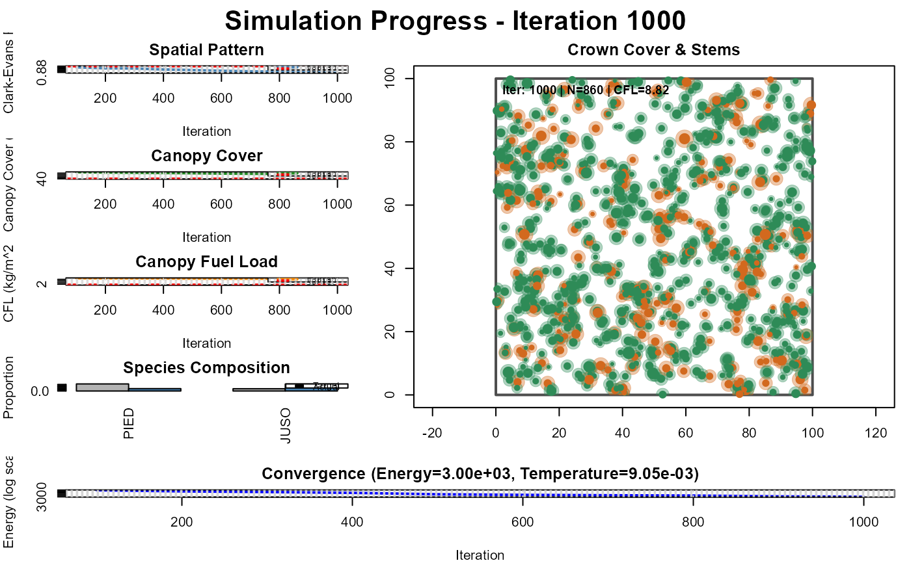

Comprehensive analysis and reporting function that compares simulation results to targets, calculates mortality statistics, analyzes nurse tree effects, generates summary tables, and saves outputs to CSV files and PDF plots.
Usage
analyze_simulation_results(
result,
targets,
prefix = "simulation",
save_plots = TRUE,
plot_width = 12,
plot_height = 8,
nurse_distance_target = 2.5,
target_mortality = 15
)Arguments
- result
Result object from simulate_stand()
- targets
List of target parameters used in simulation
- prefix
Character prefix for output filenames (default: "simulation")
- save_plots
Logical, whether to save PDF plots (default: TRUE)
- plot_width
Width of PDF plots in inches (default: 12)
- plot_height
Height of PDF plots in inches (default: 8)
- nurse_distance_target
Target distance for nurse tree effect (default: 2.5m)
- target_mortality
Target mortality percentage (default: 15.0)
Examples
# \donttest{
# Use built-in config for complete parameters
config <- pj_huffman_2009()
result <- simulate_stand(
targets = config$targets,
weights = config$weights,
plot_size = 100,
max_iterations = 1000
)
#> Iter 1000: Energy=3000.009018, CE=0.873, Cover=0.561, CFL=8.817, N=860, Temp=0.009048

analyze_simulation_results(result, config$targets, prefix = "pj_woodland")
#>
#>
#> ===============================================================================
#> SIMULATION RESULTS SUMMARY
#> ===============================================================================
#> Error in .checkTypos(e, names_x): Object 'Status' not found amongst [Number, x, y, Species, DBH, Height, CrownRadius, CrownDiameter, CrownArea, CrownBaseHeight, ...]
# }